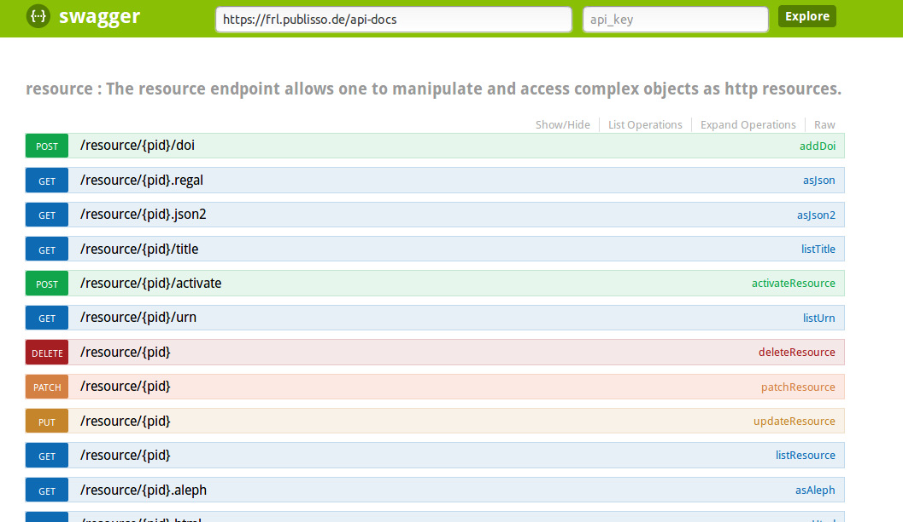

Regal –
Eine flexible Repository Lösung
Jan Schnasse,
Publikationssysteme, hbz NRW

hbz, Köln, 2018-09-05
Diese Präsentation:
http://hbz.github.io/slides/danrw-20180905
Installationen
-
Derzeit zwei Installationen
- Fachrepositorium Lebenswissenschaften (ZBMED)
- Edoweb Archivserver (LBZ)
- ca. >24.000 Pdfs
- ca. >10.000 Titeldatensätzen
- ca. >1.000 Webseiten
- ca. >300 periodisch archiviert
- mit ca. >1.900 Versionen


Hosting
- Drupal CMS
- Elasticsearch Suchindex
- Fedora Commons Archiv
- Matomo Statistik
- Web-API nach Wunsch
- hbz Rechenzentrum
- Flexible Serverarchitektur
- Zweistufiges Entwicklungssystem
- Tägliche Backups
- Performante Netzanbindung
- SSL Zertifikate per DFN

{kind=link}
Software Entwicklung
- Open Source lizensiert auf auf Github
- Modulare flexible Services
- Eingebettet in die hbz Infrastruktur
Software Architektur
- Flexible service-orientierte Architektur
- Aufbau großer Webseiten möglich
- Trennung von Oberfläche und Datenschicht
- PHP CMS - Synergien mit Opus Entwicklung
- Datenschicht mit Fedora-Commons
- Eigene Integrationsschicht um Drittsyteme anzubinden
Software Architektur
- Integrationsschicht in Form mehrere Module
- regal-api als Kernmodul
- Jedes Modul hat seine eigene Datenbank
- Zugriff auf die Daten eines anderen Moduls über APIs
Regal im DANRW
Regal API
/public/docu
Regal API
... ein paar BeispieleObjekt anlegen - Request
| Location | /resource/danrw |
|---|---|
| Method | POST |
| Header | User |
Body |
{
"contentType" : "head"
} |
Objekt anlegen - Response
| Header | Location: {AbsoluteURI} |
Body |
{
"code" : "200",
"message" : "danrw:1 successfully created!"
} |
|---|---|
| Code | 200 |
Metadaten hinzufügen - Request
| Location | /resource/danrw:1/metadata |
|---|---|
| Method | PUT |
| Header | Content-Type:text/plain;charset=utf-8 |
Body | <danrw:12> <http://purl.org/dc/terms/title> "Title"^^<http://www.w3.org/2001/XMLSchema#string> . <danrw:12> <http://hbz-nrw.de/regal#parallelEdition> "HT016543284" . |
Metadaten hinzufügen - Response
| Header | Body |
{
"code" : "200",
"message" : "danrw:1 metadata updated!"
}
|
|---|---|
| Code | 200 |
Hierarchie erzeugen - Request
| Location | /resource/danrw:1 |
|---|---|
| Method | PATCH |
| Header | Content-Type:application/json |
Body |
{
"parentPid" : "danrw:2"
}
|
Daten hochladen - Request
| Location | /resource/danrw:1/data |
|---|---|
| Method | POST/PUT |
| Header | Body | md5=ff3a952d5c2d3d53481553b16e37cba6; type=application/pdf; data=@$HOME/local/opt/regal/regal-install/test.pdf |
Authorization
Basic Auth Regal-API bietet unterschiedliche Rollen für den Zugriff.Proprietary headers
UserId=ulbmDie eigentliche Nutzerverwaltung erfolgt außerhalb von regal-api. Nutzerinformationen können im Header mit geschickt werden.
Roadmap
Kontakt
Email: schnasse@hbz-nrw.deGithub: GitHub
Die Slides sind unter einer CC-BY-4.0-Lizenz veröffentlicht.